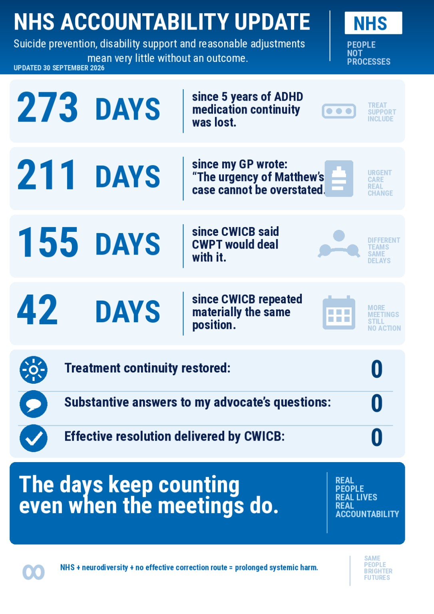

first person · Coventry and Warwickshire Partnership NHS Trust · Coventry and Warwickshire Integrated Care Board · 30 September 2026
Still no medication. This is the record.
These clips are the inside of the gap. As of today the established ADHD medication has not been restored. Walking is still severely limited. The pain is still constant. Coventry and Warwickshire Partnership NHS Trust and Coventry and Warwickshire Integrated Care Board have still not put a named owner back on the plan.
If you are in immediate danger, call 999. Samaritans: 116 123. NHS urgent mental health: 111, option 2.
30 September 2026 update
Status on 30 September 2026: the established ADHD medication had still not been restored. The update card below summarises the position on that date.

Medication deep dives (Google Drive) · Living archive
29 July 2026, 11:12 BST
Container metadata on this file: creation time 2026-07-29T10:12:56Z, Samsung offset +0100, so 11:12 British Summer Time. Twenty-four seconds. No edit date that replaces that capture time.
What is said, in the speaker’s words: a demand for help, that nobody is helping, that it is agony, and that the people responsible do not appear to care. That is the record of the day. It is not a clinical assessment.
Going upstairs — original file dated 4 September 2026
The original clip in the Grok bot Drive folder is named 2026-09-04-202802584.mp4. That is the date used here. A later social re-export of the same clip had no container creation time. Forty-seven seconds. The end card in the file reads: five years treated, still no continuity, another day without medication, 111 contacted, still waiting. As of 30 September 2026 that is twenty-six days after the stairs clip, and sixty-three days after the 29 July clip. Medication still not restored.
8 August 2026, 11:52
Filename VID_20260808_115239_282.mp4. Twenty-three megabytes. Not transcribed on this page. It sits between the July clip and the September stairs clip.
Two longer clips, linked not embedded
These are in the same Drive folder. They are too large for this drop: 9 April 2026, 115 MB and 28 August 2026, 145 MB. Dates are from the filenames.
Quotes with permission, and the limits on them
Professor Philip Asherson, 24 August 2026, citing NICE NG87 recommendation 1.5.1: healthcare providers should ensure continuity of care for people with ADHD. He said he was not involved in the care, lacked the clinical details, and was not then in clinical practice. He also wrote that, from the notes sent to him, continuity appeared to have ended because of a withdrawal from the service in December 2025, with no alternative arrangements in place. That limitation stays on the page. Extract and permission, 27 August 2026.
Professor Tom Shakespeare, 1 September 2026: “I think this is a failure of disability-access/reasonable accommodation.” He was not asked to make an Equality Act finding, and he did not. Extract and permission.
What the organisations wrote
- GP, quoted on the 30 September count: “The urgency of Matthew’s case cannot be overstated.” Two hundred and eleven days before that count.
- Coventry and Warwickshire Integrated Care Board, 19 August 2026: “the ICB remains assured that CWPT is best placed to respond to concerns about your individual care and treatment.” Same loop. No medication restored.
- South Warwickshire mental health team visit: the adult neurodevelopmental team at Coventry and Warwickshire Partnership NHS Trust intended to send a letter the following week. The letter did not arrive.
- Cardiology clearance dated 19 June 2026. ADHD medication still described as held for checks that had already been reported normal. No restart date.
Coventry and Warwickshire Partnership NHS Trust’s ADHD medication administration route is the point the correspondence keeps returning to. Ten months after the interruption, the public position from Coventry and Warwickshire Integrated Care Board was still that the trust was best placed. Best placed is not a prescription, a taper, or a safety plan.
What this page claims, and what it does not
The claim is the gap: an established plan stopped, warnings were given, meetings happened, and on 30 September 2026 continuity was still zero. The documentation was made while the person was in ongoing pain and being passed between Coventry and Warwickshire Partnership NHS Trust and Coventry and Warwickshire Integrated Care Board. A self-inflicted tendon injury has been reported in that same period, after dopaminergic treatment was not restored. The method is not described here.
This page does not use the criminal standard “beyond reasonable doubt.” That is a court’s phrase. What is on the page is the paper trail and the body on the day the camera was on. A response letter is not implementation. Scapegoating the distress, or redirecting it to a crisis line that cannot restart the specialist plan, does not close the gap.
Other deaths are not this case. Coroners have warned that ADHD delay costs lives. Those records keep their own limits. The transferable point is that a service which already has the warning, and still has no owner for an interrupted plan, is not a safety system.
Same pattern, other voices
Screenshots collected 17–22 July 2026 from public Facebook posts, names redacted at source. They are not this file. They show the same shield language: “appropriate care overall” used to dodge the chronology; notes treated as truer than the patient’s paper; solicitors declining; people saying they have already tried every route. That is the loop Coventry and Warwickshire Partnership NHS Trust and Coventry and Warwickshire Integrated Care Board are still in on this file.
A compiled UK care casefile dated September 2026, held in the same Drive folder, counts 105 ADHD entries, including a cluster on medication lost after years of stable treatment, CAMHS-to-adult cliffs, and waits that sit next to Prevention of Future Deaths reports. Those entries stay in the working set. This page does not republish other people’s names or inquest findings as if they were this case.
What else is in the folder and not yet on the public site
20260729_111231.mp4— agony clip, already dated from metadata.2026-09-04-202802584.mp4— stairs original.VID_20260808_115239_282.mp4— 8 August 2026, 23 MB. Not transcribed in this pass.20260409_013115.mp4and20260828_022315.mp4— 115 MB and 145 MB. Too large for this Netlify drop. Dates in the names: 9 April 2026 and 28 August 2026. Host those on Netlify large-media or YouTube unlisted and link them.
The journey count · The public argument · Dated policy copies